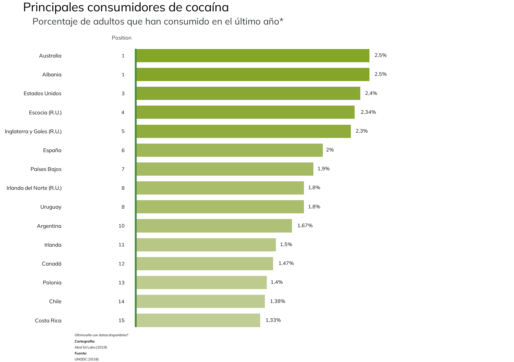
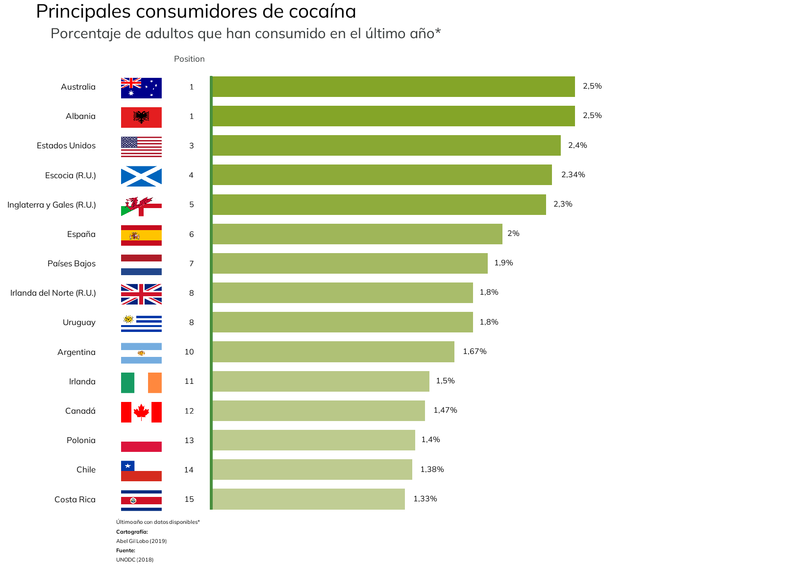
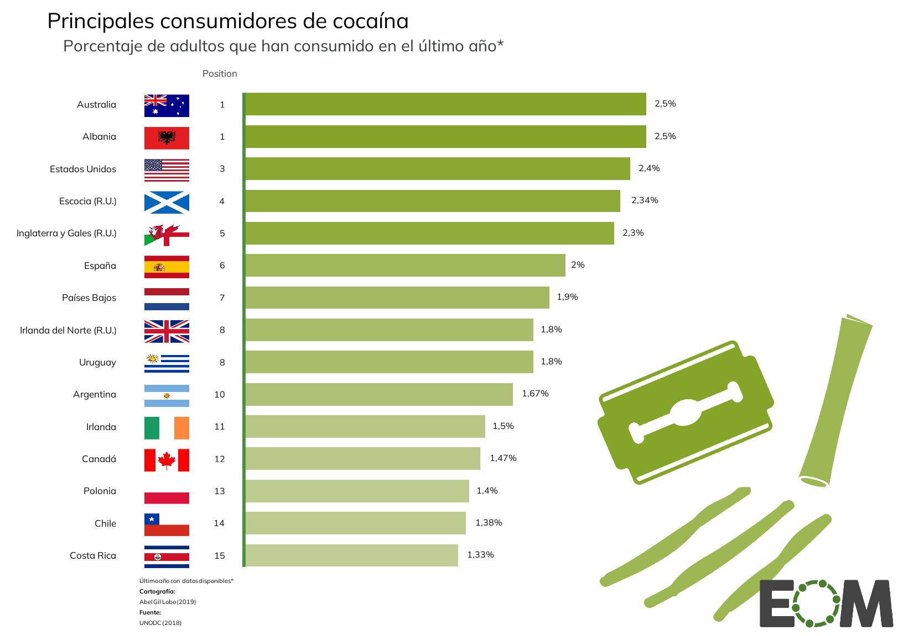
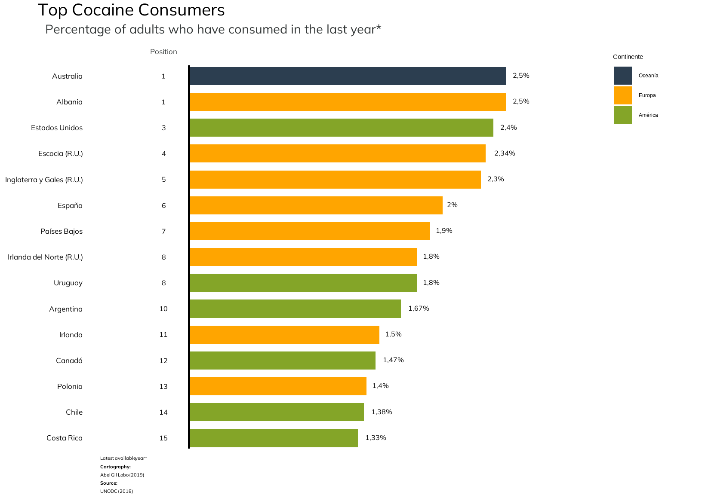
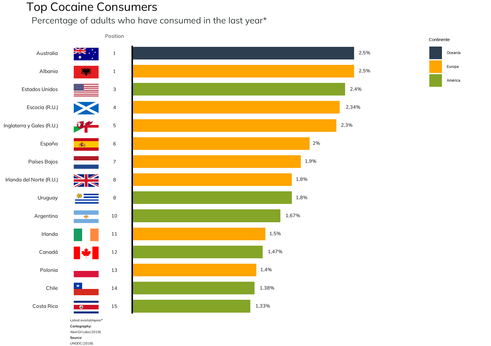
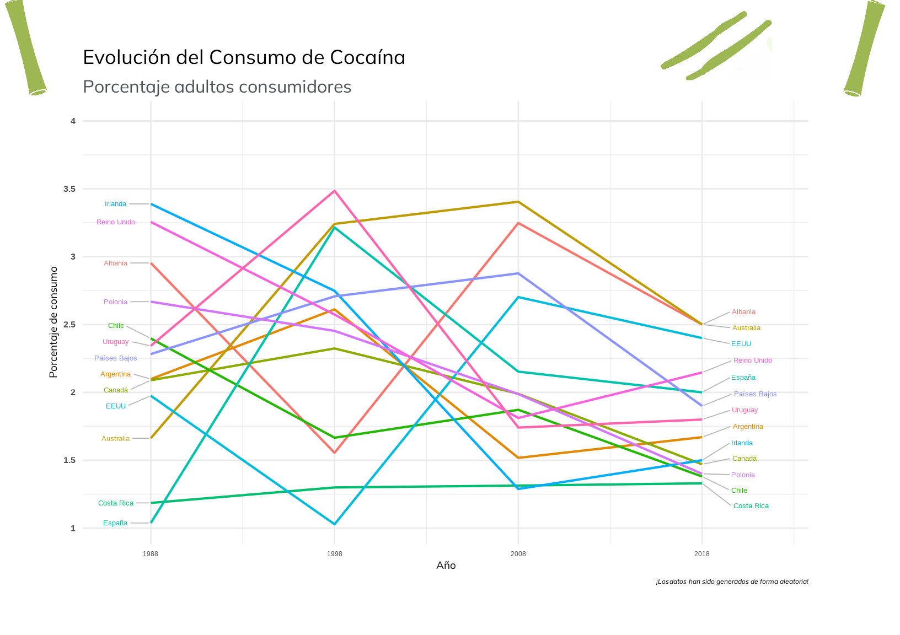

This project aims to provide insights into the principal consumers of cocaine through a bar plot. I chose this topic because I find it interesting and relevant, especially in relation to the global issues surrounding drug trafficking. The bar plot serves as an effective tool to visually compare the data, making complex information more accessible and understandable. I was particularly inspired by the work of El Orden Mundial, which I consider they do a great job of visualizing data.
First I load the libraries that I will need to make the plot:
Now, I can start with the data i need to make the graph. In the original plot from El Orden Mundial there is one papers where they extract the information. These are: UNODC (2018): World Drug Report 2018: opioid crisis, prescription drug abuse expands; cocaine and opium hit record highs.
Unfortunately, I couldn’t find an available database with this data. I found in UNODC page other databases with the information of cocaine use, but none of them coincide with the consumption percentage of 2018 presented in the plot.
Due to this, I will try to make my own database with the information in order to make the representation later.
# Data I need: Country, Position, and Consume Percentage.
cocaine_data <- tibble(
Posición = c(1, 1, 3, 4, 5, 6, 7, 8, 8, 10, 11, 12, 13, 14, 15),
PaÃs = c("Australia", "Albania", "Estados Unidos", "Escocia (R.U.)", "Inglaterra y Gales (R.U.)",
"España", "PaÃses Bajos", "Irlanda del Norte (R.U.)", "Uruguay", "Argentina",
"Irlanda", "Canadá", "Polonia", "Chile", "Costa Rica"),
`Porcentaje de consumo (%)` = c(2.5, 2.5, 2.4, 2.34, 2.3, 2.0, 1.9, 1.8, 1.8, 1.67,
1.5, 1.47, 1.4, 1.38, 1.33)
)
#I do this to order the countries in the graph
cocaine_data$PaÃs <- factor(cocaine_data$PaÃs, levels = rev(cocaine_data$PaÃs))Now, I am going to choose the font I am going to use for the text in the plot.
library(showtext)
font_add_google("Mulish", "mulish")
showtext_auto()I needed to change the original font as it wasn’t open-source. I selected a font from Google Fonts that is slightly similar, ensuring the visual appearance aligns with the authentic bar plot.
Now, I can start with the plot. I am going to do this by layers, I consider it will make the code more readable and organized, ensuring each part of the plot is built in a modular way.
The first step regarding to the graph creation is to restrict the length and height of the graph, for this I introduce <```{r, fig.width= 8.5, fig.height= 6}>
barchart_coc1 <- ggplot(cocaine_data, aes(x = PaÃs,
y = `Porcentaje de consumo (%)`,
fill = `Porcentaje de consumo (%)`),
family = "mulish", font.main = 2) +
# Create bar chart with identity stat (values directly from data)
geom_bar(stat = "identity", width = 0.7) +
# Flip to make a horizontal bar chart
coord_flip() +
# Add a vertical line on the axis Y
geom_segment(aes(x = 0.65, xend = 15.35, y = 0, yend = 0),
color = "#498f3d",
linewidth = 0.8) +
# Add positions of the countries next to the Y axis
geom_text(aes(label = Posición, y = -0.12),
hjust = 1,
color = "#0A0A0A",
size = 4.3, family = "mulish", font.main = 2) +
# Add consumption percentages at the end of each bar
geom_text(aes(label = paste0(gsub("\\.", ",",
formatC(`Porcentaje de consumo (%)`,
format = "f", digits = 2, drop0trailing = TRUE)), "%"),
y = `Porcentaje de consumo (%)`),
hjust = -0.4,
vjust = 0.38,
color = "#0A0A0A",
size = 4.25,
family = "mulish", font.main = 2) +
# Adjust the expansion of the y-axis to give more space at the edges
scale_y_continuous(expand = expansion(add = c(0.6, 1.5))) +
# Extend the x-axis limits slightly to make space for annotations
expand_limits(x = 16.4) +
# Add a label for the "Position" column
annotate(geom = "text", label = "Position",
x = 15.85, y = -0.15, size = 4.4, vjust = 0,
color = "#353939", family = "mulish") +
# Use a color gradient to fill the bars (low to high values)
scale_fill_gradient(low = "#c0cd94", high = "#84a528") +
# Add titles, subtitles, and captions
labs(title = "Principales consumidores de cocaÃna",
subtitle = "Porcentaje de adultos que han consumido en el último año*",
caption = paste0(
"Último año con datos disponibles*<br>",
"**CartografÃa:**<br>",
"Abel Gil Lobo (2019)<br>",
"**Fuente:**<br>",
"UNODC (2018)"),
y = "Consumption Percentage (%)",
x = NULL) +
# Apply a minimal theme for the plot
theme_minimal() +
theme(
# Remove x-axis title, text, and ticks
axis.title.x = element_blank(),
axis.title.y = element_blank(),
axis.text.x = element_blank(),
axis.ticks.x = element_blank(),
panel.grid = element_blank(),
axis.text.y = element_text(size = 13, family = "mulish", color = "#0A0A0A"),
# Remove the grid lines
panel.grid.major = element_blank(),
# Hide the legend
legend.position = "none",
# Adjust plot margins
plot.margin = margin(t = 0, r = 5, b = 1, l= 2),
# Remove panel and plot backgrounds
panel.background = element_blank(),
plot.background = element_blank(),
# Style the caption with markdown support
plot.caption = element_markdown(hjust = 0, vjust = 1, face = "plain",
size = 8, family = "mulish", margin = margin(t = 0, r = 0, b = 0, l = 11)),
# Style the title and subtitle with specific positions and sizes
plot.title = element_text(hjust = 0.07, vjust = 0,
size = 29, family = "mulish"),# Adjust bottom margin for title
plot.subtitle = element_text(hjust = 0.12, vjust = 0,
size = 22, color = "#353939", family = "mulish"),# Adjust bottom margin for subtitle
# Position title and subtitle within the plot panel
plot.title.position = "plot",
plot.subtitle.position = "plot"
)
barchart_coc1
Now I can continue with the flags, which have been one of the main challenges. First, it was difficult to find the right package for this task. Second, the issue was with the images themselves, as I initially had to download them, which added to the complexity.
Finally, I decided to use a package that I have downloaded from Github, called “flagon”. <“https://github.com/coolbutuseless/flagon”>
But there is also a particularity, some of the flags of the original plot are not in this package (because these are from regions inside a country), so I needed to download in the project file.
#Install the package:
library(devtools)
install_local("C:/Users/jorge/Desktop/CSS/Data-Visualization/Cocaine in Europe - Datavis/flagon-master")
library(png)
library(flagon)
# Read PNG images for flags
Australia <- readPNG(flagon::flags("au"))
Albania <- readPNG(flagon::flags("al"))
Estados_Unidos <- readPNG(flagon::flags("us"))
Escocia <- readPNG("C:/Users/jorge/Desktop/CSS/Data-Visualization/Cocaine in Europe - Datavis/flagon-master/inst/png/sct.png")
Inglaterra <- readPNG("C:/Users/jorge/Desktop/CSS/Data-Visualization/Cocaine in Europe - Datavis/Images/England and Wales.png")
España <- readPNG(flagon::flags("es"))
Paises_Bajos <- readPNG(flagon::flags("nl"))
Irlanda_norte <- readPNG("C:/Users/jorge/Desktop/CSS/Data-Visualization/Cocaine in Europe - Datavis/Images/Northern Ireland.png")
Uruguay <- readPNG(flagon::flags("uy"))
Argentina <- readPNG(flagon::flags("ar"))
Irlanda <- readPNG(flagon::flags("ie"))
Canada <- readPNG(flagon::flags("ca"))
Polonia <- readPNG(flagon::flags("pl"))
Chile <- readPNG(flagon::flags("cl"))
CostaRica <- readPNG(flagon::flags("cr"))
#Add flags to the bar chart using `annotation_raster`
flag_plot <- barchart_coc1 +
annotation_raster(CostaRica, xmin = 0.6, xmax = 1.3, ymin = -0.62, ymax = -0.34) +
annotation_raster(Chile, xmin = 1.6, xmax = 2.3, ymin = -0.62, ymax = -0.34) +
annotation_raster(Polonia, xmin = 2.6, xmax = 3.3, ymin = -0.62, ymax = -0.34) +
annotation_raster(Canada, xmin = 3.6, xmax = 4.3, ymin = -0.62, ymax = -0.34) +
annotation_raster(Argentina, xmin = 5.6, xmax = 6.3, ymin = -0.62, ymax = -0.34) +
annotation_raster(Irlanda, xmin = 4.6, xmax = 5.3, ymin = -0.62, ymax = -0.34) +
annotation_raster(Irlanda_norte, xmin = 7.6, xmax = 8.3, ymin = -0.62, ymax = -0.34) +
annotation_raster(Uruguay, xmin = 6.6, xmax = 7.3, ymin = -0.62, ymax = -0.34) +
annotation_raster(Paises_Bajos, xmin = 8.6, xmax = 9.3, ymin = -0.62, ymax = -0.34) +
annotation_raster(España, xmin = 9.6, xmax = 10.3, ymin = -0.62, ymax = -0.34) +
annotation_raster(Inglaterra, xmin = 10.6, xmax = 11.3, ymin = -0.62, ymax = -0.34) +
annotation_raster(Escocia, xmin = 11.6, xmax = 12.3, ymin = -0.62, ymax = -0.34) +
annotation_raster(Estados_Unidos, xmin = 12.6, xmax = 13.3, ymin = -0.62, ymax = -0.34) +
annotation_raster(Albania, xmin = 13.6, xmax = 14.3, ymin = -0.62, ymax = -0.34) +
annotation_raster(Australia, xmin = 14.6, xmax = 15.3, ymin = -0.62, ymax = -0.34)
#Now, we can display the final plot with flags
flag_plot
As we can see, one problem I encountered was with the quality of the flags in the graph. Despite using the annotation_raster() function to add them, the quality of the flags appeared quite poor. For the shades that has the authentic graph, I tried to introduce grey rectangles on the back of the flags but it wasn’t a good option. Also I tried to edit the images of the packages but then when I tried to introduce those flags in the graph they dissappeared.
The next step is to introduce the logos. These original figures were difficult to find, so I decided to made a screenshot of the original plot and introduce the pictures with patchwork package.
#logos
library(patchwork)
library(grid)
library(png)
# Read the PNG images for the logos
logo1 <- readPNG("C:/Users/jorge/Desktop/CSS/Data-Visualization/Cocaine in Europe - Datavis/eom.png")
logo2 <- readPNG("C:/Users/jorge/Desktop/CSS/Data-Visualization/Cocaine in Europe - Datavis/cuch.png")
#Convert images into raster objects to be used in the plot
logo1_grob <- rasterGrob(logo1, interpolate = TRUE) #Convert the first logo into a graphical object
logo2_grob <- rasterGrob(logo2, interpolate = TRUE) #Convert the second logo into a graphical object
#Combine the bar chart with flags and logos
plot_logo <- flag_plot +
# Add Logo 1 in the topright corner
inset_element(
logo1_grob,
left = 0.62, bottom = -0.12, right = 1.02, top = 0.17, #Position for top-right corner
align_to = "panel", # Align the position to the panel dimensions
on_top = TRUE # Ensure the logo appears on top of the plot
) +
# Add Logo 2 in the bottomright corner
inset_element(
logo2_grob,
left = 0.62, bottom = 0.12, right = 1.02, top = 0.56, #Position for bottom-right corner
align_to = "panel",
on_top = FALSE
)
#The final plot
plot_logo
CRITICISM OF THE ORIGINAL GRAPH:
Although it is titled Main Cocaine Consumers, all the observations are countries except for Scotland, England and Wales, and Northern Ireland. Two issues can be identified here: first, while these territories are divided, England and Wales are kept together, meaning these observations do not correspond to an administrative area of the United Kingdom. Second, I believe these observations should have been grouped into a single one, United Kingdom, to allow for a better comparison.
It’s important to acknowledge that this is a sensitive topic, as it touches on drug consumption, which involves complex social, economic, and cultural factors. Additionally, gathering reliable data on cocaine use poses significant challenges. Drug use is often underreported due to stigma, illegality, and variations in how surveys or studies are conducted across different regions or countries.
This previous part have been my replica to the graph. As you can see, there are some differences. First, there are some adjustment issues, such as with the size of the figures, text, and positioning. I’ve tried to make it as similar as possible, but there are still some aspects that could be improved. Second, the flag images, as in the original, the quality of these is much higher than what I’ve managed to achieve, as well as the shading behind them.
Considering the points mentioned, I can now move forward with improving the graph. Despite the challenges, I believe the original graph is a strong representation of the data. It effectively conveys the information in a clear and straightforward manner. The simplicity of the design makes it easy to understand, and the choice of a bar plot is particularly appropriate for visualizing this type of comparative data.
First, I will proceed to address some aesthetic aspects that, in my opinion, will improve the overall quality of the graphic:
1.Aligning positions: Adjusting the positioning number to ensure they are visually balanced and aligned properly.
2.Axis line: Modifying the line on the axis to make it more distinct will help to clarify the data’s structure and improve the overall clarity of the graph.
# Create the bar chart with reordered countries and custom aesthetics
upgrade <- ggplot(cocaine_data, aes(x = reorder(PaÃs, `Porcentaje de consumo (%)`), # Reorder countries by consumption percentage
y = `Porcentaje de consumo (%)`,
fill = `Porcentaje de consumo (%)`),
family = "mulish", font.main = 2) +
# Add horizontal bars for each country
geom_bar(stat = "identity", width = 0.7) +
# Flip the axes for a horizontal bar chart
coord_flip() +
# Add a horizontal line at y = 0 to connect the starting points of the bars
geom_segment(aes(x = 0.6, xend = 15.4, y = 0, yend = 0),
color = "black", #Change the color from the original one
linewidth = 0.8) +
# Add the ranking positions to the left of the y-axis
geom_text(aes(label = Posición, y = -0.2),
hjust = 0.5, #Adjust text horizontally
color = "#0A0A0A", #Text color
size = 4.3, family = "mulish", font.main = 2) +
# Add the percentage of consumption at the end of each bar
geom_text(aes(label = paste0(gsub("\\.", ",", formatC(`Porcentaje de consumo (%)`,
format = "f", digits = 2, drop0trailing = TRUE)), "%"),
y = `Porcentaje de consumo (%)`),
hjust = -0.4, #Adjust the text placement horizontally
vjust = 0.38, #Adjust the text placement vertically
color = "#0A0A0A",
size = 4,
family = "mulish", font.main = 2) +
# Adjust the expansion of the y-axis
scale_y_continuous(expand = expansion(add = c(0.6, 1.5))) +
# Add additional space for the x-axis limits
expand_limits(x = 17) +
# Add a label for the "Position" column
annotate(geom = "text", label = "Posición",
x = 15.8, y = -0.2, size = 4, vjust = 0,
color = "#353939", family = "mulish") +
# Set a gradient color scale for the bars
scale_fill_gradient(low = "#c0cd94", high = "#84a528") +
# Add plot labels
labs(title = "Principales consumidores de cocaÃna",
subtitle = "Porcentaje de adultos que han consumido en el último año*",
caption = paste0(
"Último año con datos disponibles*<br>",
"**CartografÃa:**<br>",
"Abel Gil Lobo (2019)<br>",
"**Fuente:**<br>",
"UNODC (2018)"),
y = "Porcentaje de consumo (%)", # Y-axis label
x = NULL) + # No label for the x-axis
# Customize the overall theme
theme_minimal() +
theme(
axis.title.x = element_blank(), # Remove x-axis title
axis.title.y = element_blank(), # Remove y-axis title
axis.text.x = element_blank(), # Remove x-axis text
axis.ticks.x = element_blank(), # Remove x-axis ticks
panel.grid = element_blank(), #Remove grid lines
axis.text.y = element_text(size = 13, family = "mulish", color = "#0A0A0A"),
panel.grid.major = element_blank(), # Remove major grid lines
legend.position = "none", #Hide legend
plot.margin = margin(t = 0, r = 5, b = 1, l= 2), # Adjust plot margins
panel.background = element_blank(), # Set panel background to blank
plot.background = element_blank(), #Set overall plot background to blank
# Style for the plot caption
plot.caption = element_markdown(hjust = 0, vjust = 1, face = "plain",
size = 8, family = "mulish", margin = margin(t = 0, r = 0, b = 0, l = 11)),
#Style for the main title
plot.title = element_text(hjust = 0.07, vjust = 0, size = 29,
family = "mulish"),
#Style for the subtitle
plot.subtitle = element_text(hjust = 0.12, vjust = 0, size = 22,
color = "#353939", family = "mulish"),
# Position the title and subtitle within the panel
plot.title.position = "plot",
plot.subtitle.position = "plot"
)
# Display the improvements
upgradeMy aim is to make the graph more informative, so I decided to introduce the continent information in the graph.Therefore, I introduce the Continent values in a new variable.
#Introduce the variable
cocaine_data$Continente <- c("OceanÃa","Europa","América","Europa","Europa","Europa","Europa","Europa","América","América","Europa","América","Europa","América","América")
#I convert it to a factor for the legend:
cocaine_data$Continente <- factor(cocaine_data$Continente,
levels = c("OceanÃa", "Europa", "América"))
# Create the bar chart with countries and color by continent
upgrade_color <- ggplot(cocaine_data, aes(x = PaÃs,
y = `Porcentaje de consumo (%)`,
fill = Continente), family = "mulish", font.main = 2) +
geom_bar(stat = "identity", width = 0.7) +
coord_flip() + # Para girar
# LÃnea vertical en el eje y, conectando el inicio de las barras
geom_segment(aes(x = 0.6, xend = 15.4, y = 0, yend = 0),
color = "black",
linewidth = 0.8) +
# Agregar las posiciones al lado del eje Y
geom_text(aes(label = Posición, y = -0.2),
hjust = 0.5,
color = "#0A0A0A",
size = 4.3, family = "mulish", font.main = 2) +
# Agregar los porcentajes de consumo al final de cada barra
geom_text(aes(label = paste0(gsub("\\.", ",", formatC(`Porcentaje de consumo (%)`, format = "f", digits = 2, drop0trailing = TRUE)), "%"),
y = `Porcentaje de consumo (%)`),
hjust = -0.4,
vjust = 0.38,
color = "#0A0A0A",
size = 4.25,
family = "mulish", font.main = 2) +
# Ajustar la expansión del eje Y
scale_y_continuous(expand = expansion(add = c(0.6, 1.5))) +
expand_limits(x = 16.4) +
annotate(geom = "text", label = "Posición",
x = 15.85, y = -0.2, size = 4.4, vjust = 0, color = "#353939", family = "mulish") +
# Añadir la paleta de colores manualmente para la variable Continente
scale_fill_manual(values = c("OceanÃa" = "#2C3E50",
"Europa" = "#FFA500",
"América" = "#84a528")) +
labs(title = "Principales consumidores de cocaÃna",
subtitle = "Porcentaje de adultos que han consumido en el último año*",
caption = paste0(
"Último año con datos disponibles*<br>",
"**CartografÃa:**<br>",
"Abel Gil Lobo (2019)<br>",
"**Fuente:**<br>",
"UNODC (2018)"),
y = "Porcentaje de consumo (%)",
x = NULL) +
theme_minimal() +
theme(
axis.title.x = element_blank(),
axis.title.y = element_blank(),
axis.text.x = element_blank(),
axis.ticks.x = element_blank(),
panel.grid = element_blank(),
axis.text.y = element_text(margin = margin(r = 1.7), size = 12.8, family = "mulish", color = "#0A0A0A"),
panel.grid.major = element_blank(),
legend.position = c(0.9, 0.88),
plot.margin = margin(t = 0, r = 5, b = 1, l= 2),
panel.background = element_blank(),
plot.background = element_blank(),
plot.caption = element_markdown(hjust = 0, vjust = 1, face = "plain", size = 8, family = "mulish", margin = margin(t = 0, r = 0, b = 0, l = 11)),
plot.title = element_text(hjust = 0.07, vjust = 0, size = 29, family = "mulish"), # Ajuste margen inferior del tÃtulo
plot.subtitle = element_text(hjust = 0.12, vjust = 0, size = 22, color = "#353939", family = "mulish"), # Ajuste margen inferior del subtÃtulo
plot.title.position = "plot", # TÃtulo dentro del panel
plot.subtitle.position = "plot" # SubtÃtulo dentro del panel
)
upgrade_color
With these aesthetic improvements, the graph now allows us to visually capture more information. Each bar is assigned a different color representing a continent: blue for Oceania, yellow for Europe, and green for the Americas, as indicated in the legend at the top right.
This color coding reveals that, while the top consumer is from Oceania, the majority of the remaining consumers are from Europe and America. Notably, most of these countries and regions are developed nations.
Now that I have modified the aesthetics of the graph, I can proceed with the steps I followed in the replication process.
#Add flags to the bar chart:
upgrade_flag <- upgrade_color +
# I Position the flags on the chart maintaining original coordinates
annotation_raster(CostaRica, xmin = 0.6, xmax = 1.3, ymin = -0.66, ymax = -0.38) +
annotation_raster(Chile, xmin = 1.6, xmax = 2.3, ymin = -0.66, ymax = -0.38) +
annotation_raster(Polonia, xmin = 2.6, xmax = 3.3, ymin = -0.66, ymax = -0.38) +
annotation_raster(Canada, xmin = 3.6, xmax = 4.3, ymin = -0.66, ymax = -0.38) +
annotation_raster(Argentina, xmin = 5.6, xmax = 6.3, ymin = -0.66, ymax = -0.38) +
annotation_raster(Irlanda, xmin = 4.6, xmax = 5.3, ymin = -0.66, ymax = -0.38) +
annotation_raster(Irlanda_norte, xmin = 7.6, xmax = 8.3, ymin = -0.66, ymax = -0.38) +
annotation_raster(Uruguay, xmin = 6.6, xmax = 7.3, ymin = -0.646, ymax = -0.38) +
annotation_raster(Paises_Bajos, xmin = 8.6, xmax = 9.3, ymin = -0.66, ymax = -0.38) +
annotation_raster(España, xmin = 9.6, xmax = 10.3, ymin = -0.66, ymax = -0.38) +
annotation_raster(Inglaterra, xmin = 10.6, xmax = 11.3, ymin = -0.66, ymax = -0.38) +
annotation_raster(Escocia, xmin = 11.6, xmax = 12.3, ymin = -0.66, ymax = -0.38) +
annotation_raster(Estados_Unidos, xmin = 12.6, xmax = 13.3, ymin = -0.66, ymax = -0.38) +
annotation_raster(Albania, xmin = 13.6, xmax = 14.3, ymin = -0.66, ymax = -0.38) +
annotation_raster(Australia, xmin = 14.6, xmax = 15.3, ymin = -0.66, ymax = -0.38)
#Display the chart with flags positioned
upgrade_flag
I followed the previous steps, so the problems of quality remain here.
Finally, I reintroduce the logos as in the original graph:
library(grid)
library(patchwork)
#Combine the flag chart with logos
final_upgrade <- upgrade_flag +
#Add Logo 1 (top-right position)
inset_element(
logo1_grob,
left = 0.62, bottom = -0.12, right = 1.02, top = 0.17, # Top-right corner position
align_to = "panel",
on_top = TRUE
) +
#Add Logo 2 (bottom-right position)
inset_element(
logo2_grob,
left = 0.62, bottom = 0.12, right = 1.02, top = 0.56, # Bottom-right corner position
align_to = "panel",
on_top = FALSE
)
final_upgradeThis has been the improvement to my graph. With enhancements in its visual appearance and the inclusion of data from the continents, I believe the graph now provides more information. However, the issue is that, given the quality of the original graph and the available data, the scope for improvement was limited.
Therefore, I believe two approaches could be considered with this type of data. First, creating a graph that reflects the evolution of cocaine consumption, and second, categorizing countries based on their status. I have decided on three categories: producer, transition, and consumer countries.
For the purpose of creating an alternative visualization, I am going to invent some data about the evolution of cocaine consumption in these countries. My aim is to group the countries into three categories: producer, transition, and consumer countries.
# I am going to generate random values for with the range of [0.92, 3.5]
set.seed(123)
serie_1 <- runif(15, min = 0.92, max = 3.5)
serie_2 <- runif(15, min = 0.92, max = 3.5)
serie_3 <- runif(15, min = 0.92, max = 3.5)
# Now I need to unify:
serie_completa <- c(serie_1, serie_2, serie_3,
2.5, 2.5, 2.4, 2.34, 2.3, 2.0, 1.9, 1.8, 1.8, 1.67,
1.5, 1.47, 1.4, 1.38, 1.33)
#Create a tibble with the previous information
data_countries <- tibble::tibble(
PaÃs = c("Australia", "Albania", "Estados Unidos", "Escocia (R.U.)", "Inglaterra y Gales (R.U.)", "España",
"PaÃses Bajos", "Irlanda del Norte (R.U.)", "Uruguay", "Argentina", "Irlanda", "Canadá", "Polonia",
"Chile", "Costa Rica", "Australia", "Albania", "Estados Unidos", "Escocia (R.U.)",
"Inglaterra y Gales (R.U.)", "España", "PaÃses Bajos", "Irlanda del Norte (R.U.)", "Uruguay",
"Argentina", "Irlanda", "Canadá", "Polonia", "Chile", "Costa Rica", "Australia", "Albania",
"Estados Unidos", "Escocia (R.U.)", "Inglaterra y Gales (R.U.)", "España", "PaÃses Bajos",
"Irlanda del Norte (R.U.)", "Uruguay", "Argentina", "Irlanda", "Canadá", "Polonia", "Chile",
"Costa Rica", "Australia", "Albania", "Estados Unidos", "Escocia (R.U.)", "Inglaterra y Gales (R.U.)",
"España", "PaÃses Bajos", "Irlanda del Norte (R.U.)", "Uruguay", "Argentina", "Irlanda", "Canadá",
"Polonia", "Chile", "Costa Rica"),
`Porcentaje de consumo` = serie_completa,
Año = rep(c(1988, 1998, 2008, 2018), each = 15)
)
# Now, I create the varibale estatus:
data_countries <- data_countries %>%
mutate(PaÃs = case_when(
PaÃs %in% c("Escocia (R.U.)", "Inglaterra y Gales (R.U.)", "Irlanda del Norte (R.U.)") ~ "Reino Unido",
TRUE ~ PaÃs
)) %>%
group_by(PaÃs, Año) %>%
summarise(`Porcentaje de consumo` = mean(`Porcentaje de consumo`), .groups = 'drop') %>%
ungroup() %>%
mutate(estatus = case_when(
PaÃs %in% c("Albania", "Argentina", "Costa Rica") ~ "Productor",
PaÃs %in% c("España", "Uruguay", "PaÃses Bajos") ~ "Transición",
TRUE ~ "Consumidor"
))
#Join the values of Escocia, Inglaterra, Gales e Irlanda del Norte to create Reino Unido, and I have calculated the mean.
data_countries# A tibble: 52 × 4
PaÃs Año `Porcentaje de consumo` estatus
<chr> <dbl> <dbl> <chr>
1 Albania 1988 2.95 Productor
2 Albania 1998 1.55 Productor
3 Albania 2008 3.25 Productor
4 Albania 2018 2.5 Productor
5 Argentina 1988 2.10 Productor
6 Argentina 1998 2.61 Productor
7 Argentina 2008 1.52 Productor
8 Argentina 2018 1.67 Productor
9 Australia 1988 1.66 Consumidor
10 Australia 1998 3.24 Consumidor
# ℹ 42 more rowsI must mention that since the consumption data has been generated randomly, the evolution may seem strange. However, I preferred to do it this way to represent the variations, without considering how it might turn out.
First, I will also maintain the size of the graph to ensure consistency and comparability with the previous one. Similarly, I will keep the font used in the replica because it is similar and I believe it enhances readability. I will also include the images of the tubes and lines.
To complete this exercise, I will present different visualization styles or attempts I have made:
In the first attempt, I aim to represent the evolution by country.
library(ggrepel)
# Plot showing the trend of cocaine consumption by country over time
ggplot(data_countries) +
aes(x = Año,
y = `Porcentaje de consumo`,
color = PaÃs) + #Color by country
geom_line(linewidth = 0.75) + #Thicker lines for clarity
ggrepel::geom_text_repel(
data = data_countries %>%
group_by(PaÃs) %>%
filter(Año == max(Año)), # Labels only for the most recent year
aes(label = PaÃs),
hjust = -0.1,
size = 3.5,
direction = "y", #Avoid label overlaps
nudge_x = 1.5, #Move labels to the right
segment.color = "grey70",
segment.size = 0.3
) +
scale_x_continuous(
breaks = c(1988, 1998, 2008, 2018), # Set x axis breaks
labels = c("1988", "1998", "2008", "2018") #x axis labels
) +
scale_y_continuous(
breaks = c(0.5, 1, 1.5, 2, 2.5, 3, 3.5, 4), #Set y axis breaks
labels = c(0.5, 1, 1.5, 2, 2.5, 3, 3.5, 4) # y axis labels
) +
expand_limits(x = 2022, y = 4) + #Expand axis limits
labs(
title = "Evolución del Consumo de CocaÃna",
subtitle = "Porcentaje de adultos que han consumido cocaÃna",
caption = "*¡Los datos han sido generados de forma aleatoria!*"
) +
theme_minimal() + # Minimal theme
theme(
legend.position = "none", # Hide legend
axis.title.x = element_text(size = 14, family = "mulish"),
axis.title.y = element_text(size = 14, family = "mulish"),
plot.title = element_text(hjust = 0, vjust = 1, size = 27, family = "mulish"),
plot.subtitle = element_text(hjust = 0, vjust = 0, size = 24, family = "mulish", colour = "#4D5154"),
plot.caption = element_markdown(size = 9, family = "mulish"),
plot.margin = unit(c(1, 2, 1, 1), "cm")
)As we can see, although the graph represents our objective, it is somewhat difficult to read. Adding the grey lines for annotating the country names has made it slightly easier to follow. However, despite the graph conveying the idea I want to express, I believe the visualization is not very clear. Therefore, I consider it important to explore other ways of visualizing the data to make it more readable and visually appealing.
Now, I will try placing the country labels at the beginning as well, to see if this approach makes the graph easier to read. Another idea that occurred to me is to include the country names both at the beginning, next to the y-axis, and at the end. In this attempt, I will also add the logos to simulate a finalized graph.
#First I am going to charge the logos
logo3 <- readPNG("C:/Users/jorge/Desktop/CSS/Data-Visualization/Cocaine in Europe - Datavis/tur.png")
logo3_grob <- rasterGrob(logo3, interpolate = TRUE)
logo4 <- readPNG("C:/Users/jorge/Desktop/CSS/Data-Visualization/Cocaine in Europe - Datavis/tur1.png")
logo4_grob <- rasterGrob(logo4, interpolate = TRUE)
logo5 <- readPNG("C:/Users/jorge/Desktop/CSS/Data-Visualization/Cocaine in Europe - Datavis/ray.png")
logo5_grob <- rasterGrob(logo5, interpolate = TRUE)
library(grid)
library(patchwork)
# Updating the country name "Estados Unidos" to "EEUU" for better fit on the plot
data_countries <- data_countries %>%
mutate(etiqueta = if_else(PaÃs == "Estados Unidos", "EEUU", PaÃs))
#Plot:
ggplot(data_countries) +
aes(x = Año,
y = `Porcentaje de consumo`,
color = PaÃs) + #Plot by country
geom_line(linewidth = 0.75) + # Increase the line width
# Labels at the beginning of the line (first year)
ggrepel::geom_text_repel(
data = data_countries %>%
group_by(PaÃs) %>%
filter(Año == min(Año)), # Filter data for labels at the start
aes(label = etiqueta),
size = 3.5,
direction = "y", #Adjust direction to avoid overlap
nudge_x = -1.9, #Move labels to the left
segment.color = "grey70", #Line color connecting the labels
segment.size = 0.3
) +
ggrepel::geom_text_repel(
data = data_countries %>%
group_by(PaÃs) %>%
filter(Año == max(Año)), #Filter only the last year
aes(label = etiqueta),
hjust = -0.1,
size = 3.5,
direction = "y", #Adjust direction to avoid overlap
nudge_x = 1.5, #Move labels to the right
segment.color = "grey70", # Add lines connecting the labels to the points
segment.size = 0.3
) +
scale_x_continuous(
breaks = c(1988, 1998, 2008, 2018), #Set breaks at specific years
labels = c("1988", "1998", "2008", "2018") #Labels for the years
) +
scale_y_continuous(breaks = c(0.5, 1, 1.5, 2, 2.5, 3, 3.5, 4),
labels = c(0.5, 1, 1.5, 2, 2.5, 3, 3.5, 4)) +
expand_limits(x = 2022, y = 4) +
labs(title = "Evolución del Consumo de CocaÃna",
subtitle = "Porcentaje adultos consumidores",
caption = "*¡Los datos han sido generados de forma aleatoria!*") +
theme_minimal() +
theme(legend.position = "none",
axis.title.x = element_text(size = 14, family = "mulish"), # Set the x-axis title size
axis.title.y = element_text(size = 14, family = "mulish"),
axis.text.y = element_text(size = 12, face = "bold"),
plot.title = element_text(hjust = 0, vjust = 1, size = 27, family = "mulish"),
plot.subtitle = element_text(hjust = 0, vjust = 0, size = 24, family = "mulish", colour = "#4D5154"),
plot.caption = element_markdown(size = 9, family = "mulish"),
plot.margin = unit(c(1, 2, 1, 1), "cm")) +
#Adding logos to the plot
inset_element(
logo3_grob,
left = 0.82, bottom = 1, right = 1.35, top = 1.25, #Position at the upper right
align_to = "panel",
on_top = TRUE
) +
inset_element(
logo4_grob,
left = -0.16, bottom = 1, right = 0, top = 1.25, #Position at the upper-left
align_to = "panel",
on_top = TRUE
) +
inset_element(
logo5_grob,
left = 0.79, bottom = 1, right = 0.95, top = 1.25, #Another position at the upper-right
align_to = "panel",
on_top = TRUE)
In this way, the evolution of consumption can be followed much more clearly, although the presence of 13 countries still makes the graph somewhat difficult to read, as there are many lines crossing each other.
Next, I will attempt the same representation as before but grouping the countries based on their status values: producers, consumers, and transition countries.
library(ggstream)
library(extrafont)
library(ggrepel)
library(scales)
library(ggplot2)
library(ggrepel)
library(dplyr)
#Colors for each status (Producer, Consumer, Transition)
color_palette <- c(
"Productor" = "#0072B2", #Strong blue for Producer
"Consumidor" = "#D55E00", #Strong red for Consumer
"Transición" = "#009E73" #Bright green for Transition
)
ggplot(data_countries) +
aes(x = Año,
y = `Porcentaje de consumo`,
group = PaÃs,
color = estatus) + # Use 'estatus' for coloring based on category
geom_line(linewidth = 0.75) + #Lines for each country
#Labels at the start of the line (first year)
ggrepel::geom_text_repel(
data = data_countries %>%
group_by(PaÃs) %>%
filter(Año == min(Año)), #Filter data for labels at the start
aes(label = etiqueta),
size = 3.5,
direction = "y", #Adjust direction to avoid overlap
nudge_x = -1.9, #ove labels to the left
segment.color = "grey70", # Line color connecting the labels
segment.size = 0.3
) +
# Labels at the end of the line (last year)
ggrepel::geom_text_repel(
data = data_countries %>%
group_by(PaÃs) %>%
filter(Año == max(Año)), #Filter only the last year
aes(label = etiqueta),
hjust = -0.1,
size = 3.5,
direction = "y", # Adjust direction to avoid overlap
nudge_x = 1.5, #Move labels to the right
segment.color = "grey70", #Add lines connecting the labels to the points
segment.size = 0.3
) +
scale_x_continuous(
breaks = c(1988, 1998, 2008, 2018),
labels = c("1988", "1998", "2008", "2018")
) +
scale_y_continuous(breaks = seq(0.5, 4, 0.5)) +
expand_limits(x = 2022, y = 4) +
labs(
title = "Evolución del Consumo de CocaÃna",
subtitle = "Porcentaje de adultos consumidores",
caption = "*¡Los datos han sido generados de forma aleatoria!*",
color = "ESTATUS"
) +
scale_color_manual(values = color_palette) + #assign colors
theme_minimal() +
theme(
legend.position = c(0.85, 0.85), # Legend position within the plot (relative coordinates)
legend.title = element_text(size = 12), # Size of the legend title
legend.text = element_text(size = 10), # Size of the legend text
axis.title.x = element_text(size = 14, family = "mulish"),
axis.title.y = element_text(size = 14, family = "mulish"),
axis.text.y = element_text(size = 12, face = "bold"), # Y-axis values in bold and size 12
plot.title = element_text(hjust = 0, vjust = 1, size = 27, family = "mulish"),
plot.subtitle = element_text(hjust = 0, vjust = 0, size = 24, family = "mulish", colour = "#4D5154"),
plot.caption = element_markdown(size = 9, family = "mulish"),
plot.margin = unit(c(1, 2, 1, 1), "cm") # Add margins (top, right, bottom, left)
) +
# Adding logos to the plot
inset_element(
logo3_grob,
left = 0.82, bottom = 1, right = 1.35, top = 1.25, #Position at the upper right
align_to = "panel",
on_top = TRUE
) +
inset_element(
logo4_grob,
left = -0.16, bottom = 1, right = 0, top = 1.25, #Position at the upper-left
align_to = "panel",
on_top = TRUE
) +
inset_element(
logo5_grob,
left = 0.79, bottom = 1, right = 0.95, top = 1.25, #Another position at the upper-right
align_to = "panel",
on_top = TRUE)Regarding this graph, although I have represented the information I initially wanted, I believe that reducing 13 countries to 3 colors still hinders clear readability.
Therefore, a solution to the problem could be to create 3 separate graphs using facet wrap, as this would help avoid having too many countries in a single grid.
library(ggplot2)
library(ggrepel)
# Crear el gráfico con facet_wrap y colores según estatus
ggplot(data_countries) +
aes(x = Año,
y = `Porcentaje de consumo`,
group = PaÃs,
color = estatus) +
geom_line(linewidth = 0.75) +
ggrepel::geom_text_repel(
data = data_countries %>%
group_by(PaÃs, estatus) %>%
filter(Año == max(Año)),
aes(label = PaÃs),
size = 3.5,
nudge_x = 1.5,
segment.color = "grey70",
segment.size = 0.3
) +
scale_x_continuous(
breaks = c(1988, 1998, 2008, 2018),
labels = c("1988", "1998", "2008", "2018")
) +
scale_y_continuous(
breaks = seq(0.5, 4, 0.5),
labels = seq(0.5, 4, 0.5)
) +
scale_color_manual(values = color_palette) +
expand_limits(x = 2022, y = 4) +
facet_wrap(~estatus, ncol = 1, scales = "free_y") +
theme_minimal() +
theme(
legend.position = "none",
axis.title.x = element_text(size = 14, family = "mulish"),
axis.title.y = element_text(size = 14, family = "mulish"),
plot.title = element_text(hjust = 0, vjust = 1, size = 27, family = "mulish"),
plot.subtitle = element_text(hjust = 0, vjust = 0, size = 24, family = "mulish", colour = "#4D5154"),
plot.caption = element_markdown(size = 9, family = "mulish"),
strip.text = element_text(size = 15, family = "mulish", face = "bold"),
plot.margin = unit(c(1, 2, 1, 1), "cm")
)Since the Consumer category contains the most countries, this could make the graph less readable. To address this issue, I will split this category into two: European Consumers and Non-European Consumers. This way, the data will be more organized and easier to interpret, ensuring clearer visibility for each group.
library(ggplot2)
library(ggrepel)
library(dplyr)
#First, odify the data:
data_countries <- data_countries %>%
mutate(estatus_modificado = case_when(
estatus == "Consumidor" & PaÃs %in% c("Reino Unido", "Irlanda", "Polonia") ~ "Consumidores Europeos",
estatus == "Consumidor" & PaÃs %in% c("Estados Unidos", "Australia", "Canadá", "Chile") ~ "Consumidores No Europeos",
estatus == "Productor" ~ "PaÃses Productores",
estatus == "Transición" ~ "PaÃses Transitorios",
TRUE ~ estatus
))
#Colors for each estatus:
color_palette <- c(
"PaÃses Productores" = "#0072B2",
"PaÃses Transitorios" = "#009E73",
"Consumidores Europeos" = "#D55E00",
"Consumidores No Europeos" = "#CC79A7"
)
#PLOT
grafico_facet <- ggplot(data_countries) +
aes(x = Año,
y = `Porcentaje de consumo`,
group = PaÃs,
color = estatus_modificado) +
geom_line(linewidth = 0.75) +
ggrepel::geom_text_repel(
data = data_countries %>%
group_by(PaÃs) %>%
filter(Año == min(Año)),
aes(label = etiqueta),
size = 3.5,
direction = "y",
nudge_x = -2.1,
segment.color = "grey70",
segment.size = 0.3
) + # LÃneas de los paÃses
ggrepel::geom_text_repel(
data = data_countries %>%
group_by(PaÃs, estatus_modificado) %>%
filter(Año == max(Año)),
aes(label = etiqueta),
hjust = -0.1,
size = 3.5,
direction = "y",
nudge_x = 0.7,
segment.color = "grey70",
segment.size = 0.3
) +
scale_x_continuous(
breaks = c(1988, 1998, 2008, 2018),
labels = c("1988", "1998", "2008", "2018")
) +
scale_y_continuous(
breaks = seq(0.5, 4, 1),
labels = seq(0.5, 4, 1)
) +
scale_color_manual(values = color_palette) + # Assign colors by estatus modificado
expand_limits(x = 2022, y = 4) +
facet_wrap(~estatus_modificado, ncol = 1, scales = "free_y") + #New panel for estatus modificado
labs(
title = "Evolución del Consumo de CocaÃna",
subtitle = "Porcentaje de adultos consumidores según el estatus",
caption = "*¡Los datos han sido generados de forma aleatoria!*"
) +
theme_minimal() +
theme(
legend.position = "none",
axis.title.x = element_text(size = 14, family = "mulish"),
axis.title.y = element_text(size = 14, family = "mulish"),
plot.title = element_text(hjust = 0, vjust = 1, size = 27, family = "mulish"),
plot.subtitle = element_text(hjust = 0, vjust = 0, size = 24, family = "mulish", colour = "#4D5154"),
plot.caption = element_markdown(size = 9, family = "mulish"),
strip.text = element_text(size = 15, family = "mulish", face = "bold"),
plot.margin = unit(c(1, 2, 1, 1), "cm")
) +
inset_element(
logo3_grob,
left = 0.82, bottom = 1, right = 1.35, top = 1.25, #Position at the upper right
align_to = "panel",
on_top = TRUE
) +
inset_element(
logo4_grob,
left = -0.16, bottom = 1, right = 0, top = 1.25, #Position at the upper-left
align_to = "panel",
on_top = TRUE
) +
inset_element(
logo5_grob,
left = 0.79, bottom = 1, right = 0.95, top = 1.25, #Another position at the upper-right
align_to = "panel",
on_top = TRUE)
grafico_facet #intentaria marcar los años en todosI believe this graph is much more readable and makes it easier to compare the patterns across the different categories. By separating the countries into smaller, more focused groups, the data becomes less cluttered and more accessible, allowing for clearer insights.
To conclude, I would like to reflect on the graphs I have created. From my point of view, if I could only choose one, my choice would be the second graph, as I believe it is the most aesthetically pleasing. Its design stands out and conveys the intended message effectively.
However, I also recognize that this graph may be challenging to read, as it requires focus to follow the progression of the lines accurately. This could make it less accessible for some viewers, especially when attempting to interpret complex patterns quickly.
On the other hand, the final graph allows for a clearer comparison of countries within the same category. It simplifies the visualization by grouping similar nations, making trends within each group more evident. However, comparing countries across different categories becomes more challenging with this layout. This trade-off highlights the difficulty of balancing clarity and comparability in visualizations, as the ideal choice often depends on the specific context and the audience’s needs.